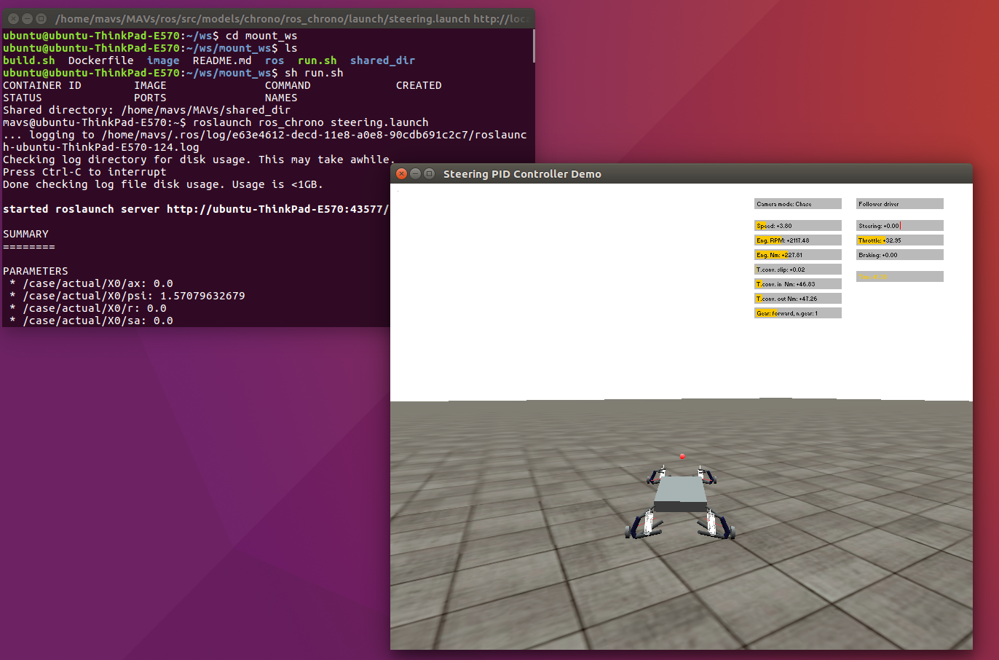

ros_chrono
A HMMWV vehicle model developed in Project Chrono is controlled using ROS parameters by 4 different modes, which are described below.
Mode 1: dynamic path following
In this mode, the HMMWV vehicle receives and follows dynamic paths with reference speed. The speed control and steering control are achieved internally using PID controllers. To run the HMMWV vehicle using this mode, use the ROS node path_following.
$ rosrun ros_chrono path_followingInput
The input includes the global coordinates of path points and the reference speed obtained from external planners.
| Name | Description |
|---|---|
/trajectory/ux | reference vehicle speed (m/s) |
/trajectory/x | global x coordinate vector of trajectory points (m) |
/trajectory/y | global y coordinate vector of trajectory points (m) |
Notes
Currently this node only supports straight paths, but will be updated soon to support interpolation and curved paths.
For more explanation of the usage, please check the demo at the end of this document.
Mode 2: dynamic steering trajectory following
In Mode 2, this node steering_controller can simulate the vehicle’s motion at the control of varying steering input. In this test, both steering and velocity command are hardcoded.
To run the HMMWV vehicle using this mode, use the ROS node ‘steering_controller’.
rosrun ros_chrono steering_controllerInput
These steering angles obtained from external planners are used to as an input for the Chrono vehicle to follow.
| Name | Description |
|---|---|
/trajectory/ux | longitudinal velocity (m/s) |
/trajectory/sa | steering angle (rad/s) |
Notes
Mode 3: dynamic speed trajectory following
In Mode 3, this node velocity_controller can simulate the vehicle’s motion at the control of varying velocity. In this test velocity command is hardcoded.
To run the HMMWV vehicle using this mode, use the ROS node ‘velocity_controller’.
rosrun ros_chrono velocity_controllerInput
These velocity trajectories obtained from external planners are used to as an input for the Chrono vehicle to follow.
| Name | Description |
|---|---|
/trajectory/ux | longitudinal velocity (m/s) |
Notes
Below is the expected output for velocity controller:
Mode 4: dynamic speed and steering trajectory following
In Mode 4, this node steering_controller can simulate the vehicle’s motion at the control of varying velocity and steering input. In this test, both steering and velocity command are hardcoded.
To run the HMMWV vehicle using this mode, use the ROS node ‘steering_controller’.
rosrun ros_chrono steering_controllerInput
These velocity and steering angle obtained from external planners are used to generate a path for the Chrono vehicle to follow.
| Name | Description |
|---|---|
/trajectory/ux | longitudinal velocity (m/s) |
/trajectory/sa | local steering angle (rad/s) |
Notes
The node rqtgraph for `steeringcontroller` is shown below:
All Modes
The following output, settings, flags, topics, and parameters apply to all modes.
Output
The output includes vehicle information stored State.msg and sent to the /state topic as: Name | Description –- | –- /state/t| simulation time (s) /state/x| global vehicle x position (m) /state/y| global vehicle y position (m) /state/ux| vehicle speed in x direction (vehicle frame) (m/s) /state/ax| vehicle acceleration in x (vehicle frame) (m/s^2) /state/v| vehicle speed in y direction (vehicle frame) (m) /state/psi| global yaw angle (rad) /state/r| yaw rate (rad/s) /state/sa| steering angle (rad)
The output includes Chrono control information stored in Control.msg and which is sent to the /control as topic as: Name | Description –- | –- /control/t| simulation time (s) /control/throttle| throttle control input [0, +1] /control/brake| brake control input [0, +1] /control/steering| steering control input (rad)
To view states updating while Chrono is running, open a new terminal and enter the container by
$ docker exec -it <container_name> /bin/bash<container_name> can be auto-filled by the Tab key. Then run
To show the states:
$ rostopic echo /stateThis displays all states in the state.msg file.
Or:
$ rostopic echo /trajectory/chronoThis displays all controls in the controlChrono.msg file.
Settings
| Name | Description |
|---|---|
system/chrono/flags/gui | Disable/Enable Chrono GUI |
Flags
| Name | Description |
|---|---|
system/chrono/flags/initialized | Chrono ROS node is initialized |
system/chrono/flags/running | Chrono simulation is running |
Topics
| Name | Description |
|---|---|
/state | vehicle states and time |
/control |
Parameters
The following parameters with SI units and angles in radians can be modified:
| Name | Description |
|---|---|
/case/X0/actual/ax | Initial x acceleration |
/state/X0/theta | Initial pitch |
/case/X0/actual/r | Initial yaw rate |
/state/X0/phi | Initial roll |
/case/X0/actual/sa | Initial steering angle |
/case/X0/actual/ux | Initial x speed |
/case/X0/actual/v | Initial velocity |
/state/X0/v_des | Desired velocity |
/case/X0/actual/x | Initial x |
/case/X0/actual/yVal | Initial y |
/case/X0/actual/psi | Initial yaw |
/state/X0/z | Initial z |
vehicle/common/Izz | (Moment of Inertia about z axis) |
vehicle/common/la | Distance from COM to front axle |
/vehicle/common/lb | Distance from COM to rear axle |
/vehicle/common/m | Vehicle mass |
/vehicle/common/wheel_radius | Wheel radius |
/vehicle/chrono/vehicle_params/frict_coeff | Friction Coefficient (Rigid Tire Model) |
/vehicle/chrono/vehicle_params/rest_coeff | Restitution Coefficient (Rigid Tire Model) |
/vehicle/chrono/vehicle_params/centroidLoc | Chassis centroid location |
/vehicle/chrono/vehicle_params/centroidOrientation | Chassis centroid orientation |
/vehicle/chrono/vehicle_params/chassisMass | Chassis mass |
/vehicle/chrono/vehicle_params/chassisInertia | Chassis inertia |
/vehicle/chrono/vehicle_params/driverLoc | Driver location |
/vehicle/chrono/vehicle_params/driverOrientation | Driver orientation |
/vehicle/chrono/vehicle_params/motorBlockDirection | Motor block direction |
/vehicle/chrono/vehicle_params/axleDirection | Axle direction vector |
/vehicle/chrono/vehicle_params/driveshaftInertia | Final driveshaft inertia |
/vehicle/chrono/vehicle_params/differentialBoxInertia | Differential box inertia |
/vehicle/chrono/vehicle_params/conicalGearRatio | Conical gear ratio for steering |
/vehicle/chrono/vehicle_params/differentialRatio | Differential ratio |
/vehicle/chrono/vehicle_params/gearRatios | Gear ratios (indexed starting from reverse gear ratio and ending at final forward gear ratio) |
/vehicle/chrono/vehicle_params/steeringLinkMass | Steering link mass |
/vehicle/chrono/vehicle_params/steeringLinkInertia | Steering link inertia |
/vehicle/chrono/vehicle_params/steeringLinkRadius | Steering link radius |
/vehicle/chrono/vehicle_params/steeringLinkLength | Steering link length |
/vehicle/chrono/vehicle_params/pinionRadius | Pinion radius |
/vehicle/chrono/vehicle_params/pinionMaxAngle | Pinion max steering angle |
/vehicle/chrono/vehicle_params/maxBrakeTorque | Max brake torque |
demoA | mode #1: dynamic path following
This demo controls HMMWV vehicle by mode 1, dynamic path following. Two straight paths, together with reference vehicle speed, are alternatively sent to the HMMWV vehicle.
To run this demo:
$ roslaunch ros_chrono path_following.launchExpected Output
MODE2: dynamic steering trajectory tracking
[INSERT DESCRIPTION]
To run:
Expected Output
Notes
MODE3: dynamic speed trajectory tracking
[INSERT DESCRIPTION]
To run:
Expected Output
Notes
OLD (below this)
A vehicle model in Chrono that can be used through ROS.
The vehicle model currently runs with rigid tire models, a rear-wheel driveline, double wishbone suspension (reduced so that the control arm positions are distance constraints), and rack and pinion steering.
To run
$ cd $HOME/MAVs/ros
$ roslaunch ros_chrono demo.launch
$ rosparam set system/default/flags/initialized trueExpected Output

To run velocity test
Velocity test shows the ability of chorono to exchange information with ros.
$ roslaunch ros_chrono demo_velocity_control.launchExpected Output
-1)
To run steering tracking test
steering tracking test shows the ability of chorono to exchange information with ros.
$ cd $HOME/MAVs/ros
$ roslaunch ros_chrono steering.launchExpected Output
 Under a constant speed, the vehicle will be controlled by the steering angle command to follow the steering angle trajectory.
Miscellaneous notes (may be outdated!)
Change Vehicle Initial Conditions
To change initial trajectory edit the parameters in the hmmwv_chrono_params.yaml config file.
$ sudo gedit ros/src/system/config/s1.yaml
To change target speed, edit:
$ sudo gedit ros/src/models/chrono/ros_chrono/config/hmmwv_params.yamlChange Values of Updated Path
For the pathfollower demo, update the parameters of /state/chrono/default/traj/yVal, /state/chrono/default/traj/x in hmmwvchronoparams.yaml. Change the system/planner parameter to chrono in chrono.yaml. In general, set system/planner to desired planner and update state/chrono/ <plannername> /traj/x, vehicle/chrono/ <planner_name> /traj/yVal.
Current Differences between 3DOF Vehicle model and HMMWV model:
| Name | 3DOF | Chrono | Description |
|---|---|---|---|
Izz | 4,110.1 | 3,570.2 | Inertia about z axis |
la | 1.5775 | 1.871831 | Distance from COM to front axle |
lb | 1.7245 | 1.871831 | Distance from COM to rear axle |
Tire Model | PACEJKA | RIGID | Tire model used by vehicle |